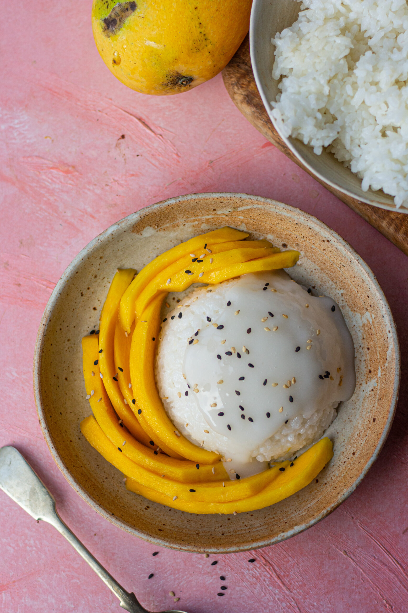

Mango Sticky Rice

Description
Mango sticky rice is a traditional Thai dessert made with glutinous rice, fresh mango, coconut milk, and salt, and served with fresh mango slices. The rice is soft and creamy, and the sweet mango balances well with the coconut flavor.
Ingredients
- 2 cups water
- 1 1/2 cups uncooked glutinous sticky white rice
- 2 cups coconut milk
- 1 cup white sugar
- 3/4 teapsoon salt
- 1 teaspoon tapioca starch
- 3 mangos
1 tablespoon toasted sesame seeds
Directions
- Combine water and rice in a saucepan. Bring to a boil, cover, and reduce heat to low. Simmer until water is absorbed, 15 to 20 minutes.
- While the rice is cooking, combine 1 ½ cups coconut milk, 1 cup sugar, and 1/2 teaspoon salt in another saucepan. Bring to a boil over medium heat; remove from the heat and set aside.
- Stir cooked rice into coconut milk mixture. Cover and allow to cool for 1 hour.
- Make a sauce by combining 1/2 cup coconut milk, 1 tablespoon sugar, 1/4 teaspoon salt, and tapioca starch in another saucepan; bring to a boil. Cook and stir just until thickened.
- Place coconut rice on a serving dish and arrange mangos on top. Pour sauce over mangos and rice. Sprinkle with sesame seeds.